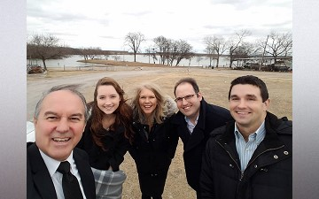

Church Planting
Planting a new church is something I had never experienced before, after lots of trial and error, lot of training and conventions, and a lot of brainstorming, I am happy to have had this hands-on experience that I will carry with me for the rest of my career.

Door Knocking
The odds of finding someone who is interested in deepening their spiritual walk by knocking on doors is roughly 1 in every 100 households. Nevertheless, when God grants you that one divine appointment then all that legwork becomes worth it.
Bible Studies
For this project we used Amazing Facts and It is Written Bible study sets. It was a blessing to see how well these studies connected with the people we met along the way.
Community
Connecting with new people by meeting them where they are is one of the most fulfilling experiences as a Christian. Showing people, the love of Christ not just through your words, but in your actions is the way that Jesus did ministry. There’s a reason for this, it takes dedication and patience, but is worth every second.
Soul Winning
Witnessing someone dedicate their lives to God through baptism is truly a privilege. Participating in the baptismal itself is an honor beyond words.
Personal Highlights
Dec. 7th was a special day. I had the privilege of baptizing my mother. All glory to God!.
Discipleship
During this experience we developed the church plant by using a fractal system. This system highlighted the importance of discipleship and is forever a tool saved in my toolbox. I plan on using an adapted fractal system in future ministry endeavors.
Evangelism
One of the coolest experiences of this church planting contract was being able to work with two very experienced evangelists. Dan Serns, who now serves as the conference president for the Central California Conference, and David Muchado, full-time Evangelist with Revelation of Love Ministries. I learned so much from the both of them and am forever grateful for the time I had with them.
Outreach
One of the fun perks of this position was the opportunity to experiment on new outreach methods. We started new activity groups that were open to the public, published news paper articles, posted brochures in local shops, door knocked, sent out online marketing books that led to Bible studies, and the list goes on. It was an exciting experience that gave me a lot of practical knowledge.
Preaching
During this church plant I was blessed to metaphorically wear many hats within ministry. Often I would serve as an unofficial Associate Pastor, but even more often I would simultaneously serve as the deacon, elder, and any other position that was needed to keep service going.
{kind=link}
{kind=link}
{kind=link}
{kind=link}
{kind=link}
{kind=link}
{kind=link}
{kind=link}
{kind=link}
{kind=link}